Study Analytics & Heatmap
Continuous 24h heatmap visualization, daily progress percentages, fire streaks, and weekly study minute charts for honest self-reflection.
A comprehensive, offline-first student productivity and study management Android application designed for disciplined school, college, and university scholars. Organize assignments, schedule weekly class timetables, monitor attendance, prepare for exams, time study sessions, and track academic progress with private StudentOS AI.
StudentFocus combines study planning, timetable organization, assignment management, attendance monitoring, and exam preparation into a unified offline Android application with zero cloud lock-in.
Continuous 24h heatmap visualization, daily progress percentages, fire streaks, and weekly study minute charts for honest self-reflection.
Real-time counter records idle hours and off-goal app sessions until you start a designated study task, turning subconscious procrastination into clear metrics.
Calculates daily study duration required to meet long-term targets against your available 24h routine budget with dynamic feasibility ratings.
Weekly timetables, attendance tracking, Subject GPA & Semester CGPA calculators, flashcards, 21-day habits, routines, and offline cash ledgers.
Locally inspects video titles, documentation queries, and apps to categorize your time into Aligned, Relevant, Neutral, and Off-Goal buckets without sending data off your phone.
Fully private on-device companion for offline commands (@help, @task, @routine) plus an optional high-speed Online mode for complex subject tutoring.
Navigate through authentic screenshots captured directly from the StudentFocus Android app. Click any app section below to preview its interface, features, and controls.
The central control hub of StudentFocus. Displays your scholar level and XP, today's completion rates, continuous 24h heatmap, idle time waste tracker, weekly study chart, study pace planner, and quick notes.
Every section of the StudentFocus dashboard is grounded in real cognitive productivity needs. Explore the core analytics and tracking engines built into the main view.
Starts you as a Novice Learner (Level 1 Scholar, XP: 0/100). Completing study blocks, checking off syllabus items, and maintaining streaks earns verifiable experience points to keep momentum high.
A GitHub-inspired activity matrix tracking study density across hours and days up to 24h max, making skipped days and consistent study patterns immediately apparent.
Ticking live when no academic session is active. Explicitly logs idle phone hours until a study task is started. Resets honestly at midnight with cumulative all-time counters.
A 7-day chronological bar chart comparing active minutes day by day so you can maintain a balanced weekly rhythm without burnout.
Input your target timeline (1d, 2d, 3d, 7d, 14d, 30d) and total study hours (5h to 100h+). The engine verifies if it fits into your 24h routine budget and provides an "Achievable" confirmation.
Engineered to streamline your daily academic workload with zero bloat and absolute clarity.
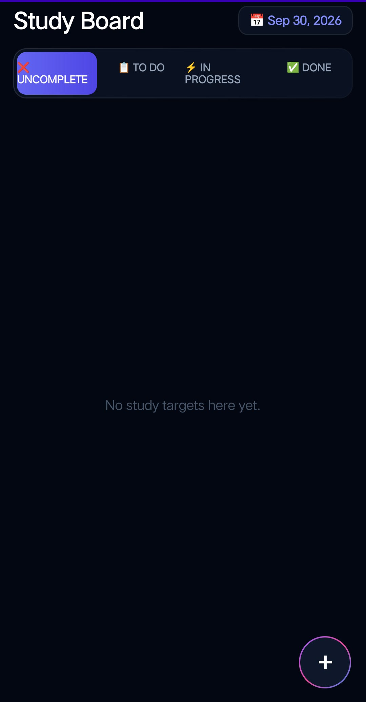
Organize assignments and revision topics across four clear stages: Uncomplete, To Do, In Progress, and Done with instant date-picker filtering.
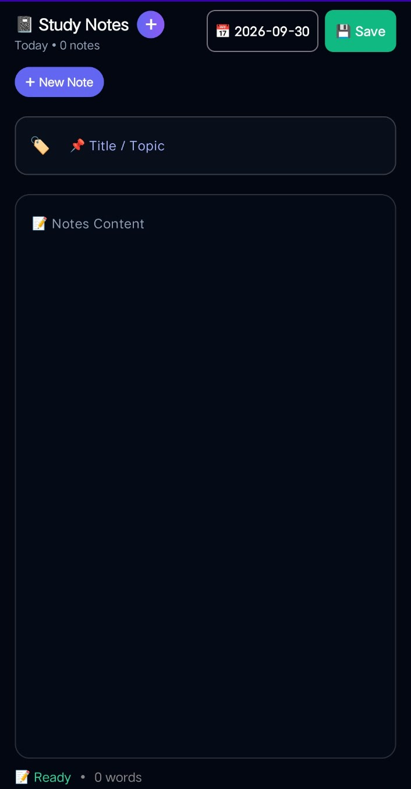
Clean, distraction-free markdown writing space with instant word count, topic tags, and timestamped saves. Stored strictly in local SQLite with zero cloud syncing risks.
High-precision timer counting active learning seconds, paired with ambient sound frequency sliders and live ongoing countdown in the Android notification shade.
StudentFocus incorporates an exhaustive set of 10 dedicated academic tools accessible under the Academic tab. Every tool solves a specific requirement without requiring separate third-party apps.
Schedule lectures, lab sessions, and study slots day-by-day (Monday through Saturday). StudentFocus syncs with your routine alarms to notify you right as a class or study block begins.
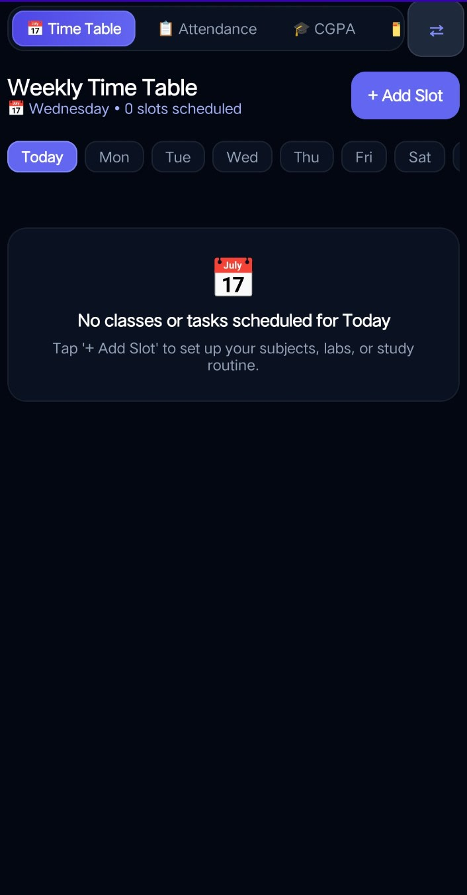
Track your presence and absence across every registered college subject. Stay safely above critical attendance thresholds (e.g. 75% or 80%) with automated safety margin calculations.
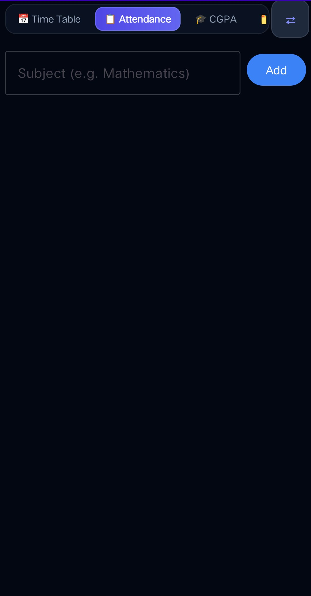
Accurately calculates your term Grade Point Average using official academic credit formulas:
GPA = Σ(Subject Credits × Grade Points) / Total Semester Credits.
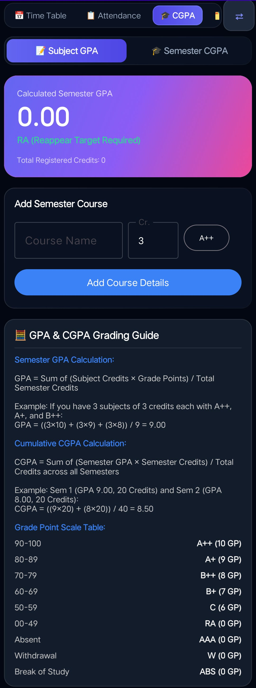
Aggregate your cumulative performance across multiple semesters with weighted credit sums:
CGPA = Σ(Semester GPA × Semester Credits) / Total Credits across all Semesters.
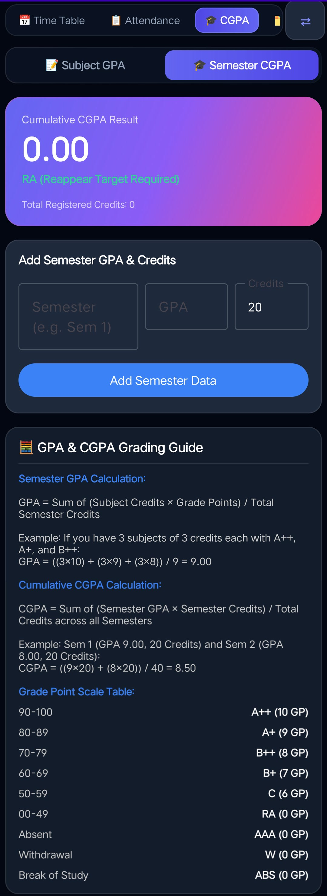
Create specialized revision decks for formulas, vocabulary, definitions, and medical or technical terminology. Test yourself without distraction.
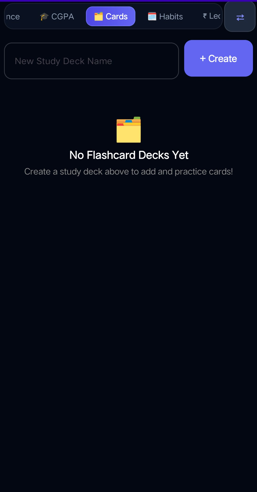
Neurological habit formation takes focused consistency. Launch 21-day streaks for morning revisions, problem-solving quotas, hydration, or sleep discipline.
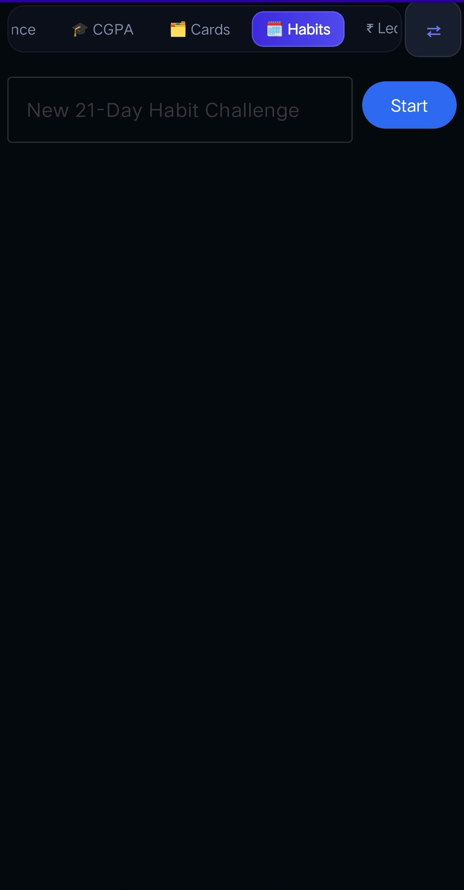
Manage hostel expenses, textbook purchases, cafeteria spending, and student allowances. Filter by date range and export anytime to CSV or formatted PDF.
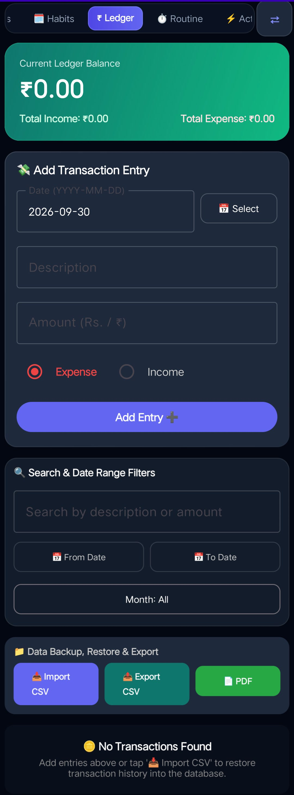
Where do your 24 hours actually go? Audit your daily allocations into Useful, Necessary, Waste, and Free hours with automated percentage scores.
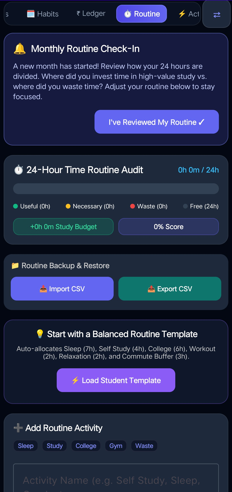
A privacy-preserving local intelligence engine that analyzes video titles, documentation queries, and app categories to evaluate goal alignment.
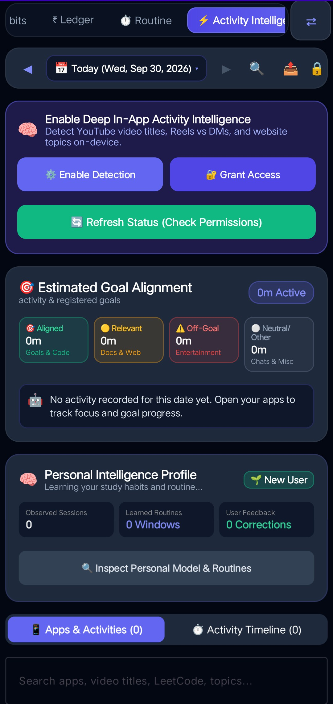
Every student's routine is different. StudentFocus lets you rearrange the order of academic tabs forward or backward to place your most critical daily tools first.
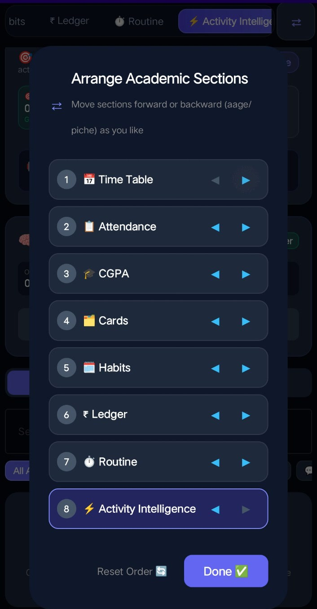
StudentFocus separates local assistance from cloud queries. Your personal notes, schedules, and routines are processed strictly on your hardware. Only deliberate general-knowledge questions connect to the internet.
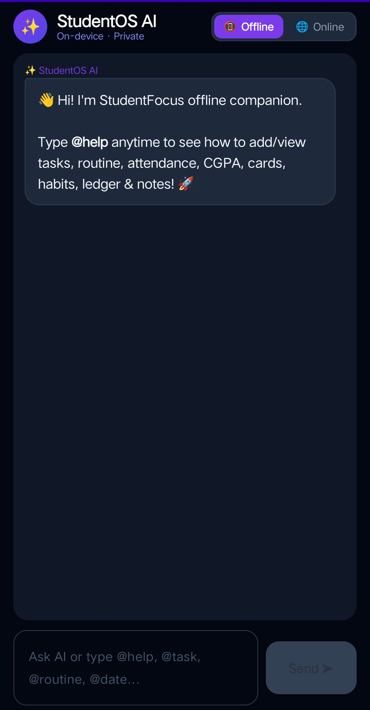
Engineered to manage and query your entire student database without transmitting a single byte over the network.
@help • @task • @routine • @attendance • @date • @cgpa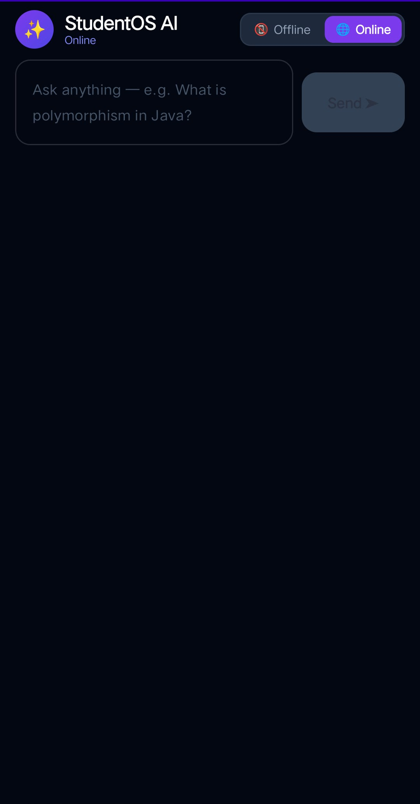
When you encounter a difficult academic concept, switch to Online mode to consult advanced reasoning models.
StudentFocus gives you total sovereignty over notifications, security locks, dashboard cards, and offline backups.
Secure StudentOS with fingerprint authentication, face unlock, or device PIN/pattern. Prevents unauthorized viewing of personal notes, grades, and financial ledgers.
One-tap Export Backup JSON and Import Backup JSON. Seamlessly migrate your entire study history to a new Android phone without registering an account.
Toggle individual switches for: Live Ongoing Timer Bar in status tray, Session & Target Completion alerts, Daily Task Reminders (9:00 AM & 7:00 PM), Time Table Alarms, and Sound/Vibration.
Teach the Activity Intelligence what counts as goal-related study (e.g. kinematics, DSA, organic chemistry). App usage outside these keywords is flagged as idle time waste.
Select preferred output languages for assistant responses: Auto-Detect, English, Hinglish, Tanglish (Tamil-English), and Telugish (Telugu-English).
Toggle visibility of all 12 dashboard cards or select presets: All (Default), Minimal Focus (Timer + Tasks + Notes), or Academic Scholar (Exams + Tasks + Pace).
All routines, flashcards, ledger transactions, grades, and study timer logs are stored exclusively in your local SQLite/Room database. Zero background analytics, zero trackers, and zero telemetry.
StudentFocus is distributed directly via official GitHub release builds. Follow the simple steps below to install and run it safely on your Android device.
Direct release binary built directly from verified source code. Safe, self-contained, and requiring no external proprietary framework dependencies.
StudentFocus is a self-signed, privacy-first release. You never need to disable device security:
Every release binary is independently auditable. Verify the cryptographic hash below against your downloaded APK or inspect the public multi-engine scan.
63bf595915568a4307c4f4420c64c827b7e97db35628994eb8305208e6b36ff8StudentFocus strictly enforces zero invasive permissions in its AndroidManifest:
Tap the download button above or visit https://studentfocus-apk.vercel.app/ to download directly in your browser.
When the download finishes, tap the completed download notification or open the downloaded APK file from your browser's Downloads or Files app.
If Android displays a security prompt asking to install from unknown sources, toggle the permission to Allow for your current browser or file manager.
Tap Install. Once installation completes, tap Open to start your first session. You can re-disable the install permission in Android Settings anytime.
Encountering an issue during installation or setup? Find short, practical solutions below.
StudentFocus is an AI-powered student productivity and study management application for Android (Android 8.0+). It combines an on-device focus stopwatch, 24-hour study heatmap, time waste auditor, Kanban task board, local study notes, class timetables, attendance tracking, GPA/CGPA calculators, 21-day habit challenges, and dual-mode StudentOS AI.
StudentFocus is designed for school, college, and university students, as well as students preparing for competitive or semester exams. It is built for scholars who want an integrated, distraction-free environment to organize assignments, schedules, attendance, and study routines with complete on-device privacy and zero cloud lock-in.
Students can:
Yes. StudentFocus features StudentOS AI with a dual-mode architecture:
@help, @task, @routine, @attendance, @cgpa, @date) without network access, querying your local SQLite database directly.Yes. StudentFocus is an offline-first application. All core features—including the focus timer, notes, timetable, attendance tracker, flashcards, 21-day habits, financial ledger, and Offline StudentOS AI—operate 100% locally on your phone using local SQLite storage without internet access or account registration.
Yes. StudentFocus provides dedicated exam preparation tools including exam countdown targets, credit-weighted GPA/CGPA calculators with reappear status flags, revision flashcard decks for spaced active recall, and attendance margin tracking to protect exam eligibility.
Download the official release directly from https://studentfocus-apk.vercel.app/. Open the downloaded file, allow unknown sources permission for your browser or file manager if prompted by Android, and tap Install. No account or registration is required.
Google Play Protect automatically flags packages downloaded outside the Google Play Store because the application has not been submitted through Google's commercial publishing portal.
StudentFocus is a clean, self-signed release. You never need to turn off device protections:
Official Step-by-Step Installation Guide: https://studentfocus-apk.vercel.app/#installation
This message typically occurs due to one of four common reasons:
Some mobile browsers lack built-in package installers. Open your device's native Files or Downloads manager app, navigate to the Download folder, and tap the downloaded APK directly from there. Ensure the file name ends in .apk and has not been saved as .zip.
Try the following diagnostic steps:
An independent, student-first productivity and study management platform built to cultivate real focus and academic discipline.
StudentFocus is an AI-powered student productivity and study management application for Android (Android 8.0+). It unifies core academic tools—study planning, timetables, attendance tracking, exam preparation, focus timers, GPA/CGPA calculators, flashcards, and private StudentOS AI—into a distraction-free, 100% offline environment.
Created by Nishant Kumar, StudentFocus was developed to solve a critical problem for school and university students: the distraction, aggressive monetisation, and intrusive tracking of modern student apps. StudentFocus is completely free, ad-free, and respects your privacy.
All personal academic data—including notes, class timetables, attendance records, study routines, and financial ledgers—resides strictly inside your Android phone's local SQLite storage. No remote database synchronization, no user account requirement, and zero background analytics.
Every feature is built around the honest realities of academic life: calculating semester GPA using official 10-point credit formulas, tracking 75% attendance thresholds to protect exam eligibility, timing deep work sessions with ambient noise, and planning daily study pace without notification spam.
Every suggestion, feature idea, and review helps shape the future of StudentFocus. Real feedback from independent scholars keeps our study tools focused on what truly matters.
Share what you love or what should be added next
Real scholar experiences • Community feedback
No advertisements. No subscription models. No background cloud tracking. Just a pure, focused productivity environment built for serious students.